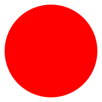
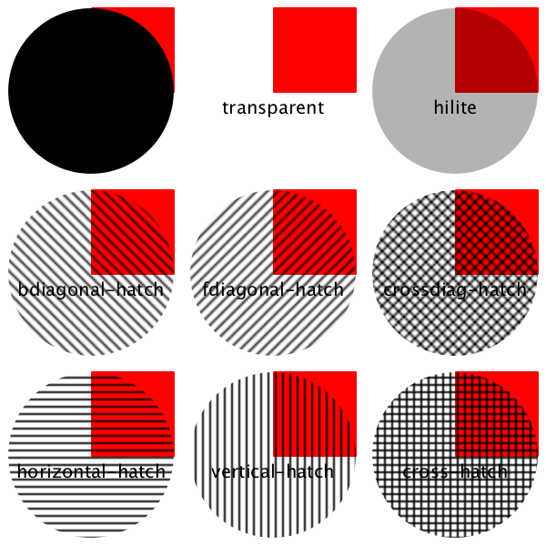
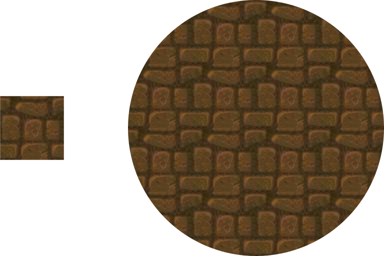

Points and Vectors (pt and vec)
| (require metapict/pt-vec) | package: base |
1 Points and Vectors
Points and vectors are represented as pt and vec structures respectively. Think of points as positions and of vectors as displacements.
> (def A (pt 3 4))
> A (pt 3 4)
> (pt-x A) 3
> (penwidth 4 (draw (pt 0 0) (pt 1/2 1/2) (pt 1 0))) 
> (def v (vec 3 4))
> v (vec 3 4)
> (vec-x v) 3
1.1 Predefined Points and Vectors
The most common points and vectors have predefined names.
value
origo : (pt 0 0)
> (penwidth 4 (draw (color "red" (draw origo)) (color "green" (draw (pt+ origo north))) (color "blue" (draw (pt+ origo south))) (color "yellow" (draw (pt+ origo left))) (color "purple" (draw (pt+ origo right))))) 
1.2 Point Operations
procedure
(pt+ A v) → pt?
A : pt? v : vec? (pt+ A B) → pt? A : pt? B : pt? (pt+ A B-or-v ...) → pt? A : pt B-or-v : (or pt? vec?)
The form (pt+ A v) returns the displacement of the point A with the vector v. That is, (a1+v1,a2+v2) is returned.
The form (pt+ A B) adds the coordinates of A and B pairwise. The point A is thus displaced with the vector OB. That is, (a1+b1,a2+b2) is returned.
The form (pt+) returns origo, (pt 0 0).
The form (pt+ A) returns the point A.
> (pt+ (pt 1 2) (vec 3 7)) (pt 4 9)
> (pt+ (pt 1 2) (pt 3 7)) (pt 4 9)
> (pt+) (pt 0 0)
> (pt+ (pt 1 2)) (pt 1 2)
> (pt+ (pt 0.3 0.4) (vec 3 0) (vec 4 0)) (pt 7.3 0.4)
The form (pt- A v) returns the displacement of the point A with the opposite of vector v. If A=(a1,a2) and v=(v1,v2) then the vector (a1-v1,a2-v2) is returned.
procedure
(pt* s A) → pt?
s : real? A : pt?
> (pt* 3 (pt 1 2)) (pt 3 6)
procedure
(dist A B) → real?
A : pt? B : pt?
> (dist (pt 4 0) (pt 4 3)) 3
procedure
(pt= A B) → boolean?
A : pt? B : pt?
procedure
(pt~ A B ε) → boolean?
A : pt? B : pt? ε : 1e-15
procedure
(med r A B) → pt?
r : real? A : pt? B : pt?
The form (med 1/3 A B) returns the point that lies one-third of the way from A to B.
> (def A (pt 0 0))
> (def B (pt 2 1))
> (list (med 0 A B) (med 1/3 A B) (med 1/2 A B) (med 2/3 A B) (med 1 A B)) (list (pt 0 0) (pt 2/3 1/3) (pt 1 1/2) (pt 4/3 2/3) (pt 2 1))
> (set-curve-pict-size 100 50)
> (with-window (window -0.2 2.2 -0.1 1.1) (penwidth 4 (draw* (for/list ([r '(0 1/3 1/2 2/3 1)] [c '("red" "orange" "yellow" "green" "blue")]) (color c (draw (med r A B))))))) 
procedure
(pt@ r θ) → pt?
r : real? θ : real?
> (require racket/math)
> (set-curve-pict-size 50 50)
> (with-window (window -1.1 1.1 -1.1 1.1) (penwidth 4 (draw* (for/list ([θ (in-range 0 (* 2 pi) (/ (* 2 pi) 12))]) (pt@ 1 θ)))))
procedure
(pt@d r θ) → pt?
r : real? θ : real?
> (pt@d 1 45) (pt 0.7071067811865476 0.7071067811865475)
> (pt@ 1 (/ pi 4)) (pt 0.7071067811865476 0.7071067811865475)
1.3 Vector Operations
In this section the coordinates of vecs v and w will be referred to as v=(v1,v2) and w=(w1,w2).
procedure
(vec+ v w) → vec?
v : vec? w : vec?
In terms of displacements the vector sum v+w can be thought of as the result of the displament v followed by the displacement w.
> (def v (vec 2 0))
> (def w (vec 0 3))
> (def v+w (vec+ v w))
> v+w (vec 2 3)
> (define (arrow v [offset (vec 0 0)]) (def A (pt+ origo offset)) (draw-arrow (curve A -- (pt+ A v))))
> (ahlength (px 12))
> (with-window (window -0.2 3.2 -0.2 3.2) (penwidth 2 (draw (color "red" (arrow v)) (color "green" (arrow w v)) (color "blue" (arrow v+w)))))

procedure
(vec- v w) → vec?
v : vec? w : vec?
procedure
(vec* s v) → vec?
s : real? v : vec?
> (vec* 3 (vec 1 2)) (vec 3 6)
procedure
(vec->pt v) → pt?
v : vec?
> (vec->pt (vec 1 2)) (pt 1 2)
procedure
(pos p) → vec?
p : pt?
> (pos (pt 1 2)) (vec 1 2)
procedure
(vec= v w) → boolean?
v : vec? w : vec?
procedure
(vec~ v w ε) → boolean?
v : vec? w : vec? ε : 1e-15
procedure
(dot v w) → real?
v : vec? w : vec?
procedure
(len2 v) → real?
v : vec?
procedure
(dir/rad α) → vec?
α : real?
procedure
(dir α) → vec?
α : real?
procedure
(vec@ r α) → vec?
r : real? α : real?
procedure
(@ A-or-v) →
real? real? A-or-v : (or pt? vec?)
procedure
(rot90 A-or-v) → (or pt? vec?)
A-or-v : (or pt? vec?) (rot-90 A-or-v) → (or pt? vec?) A-or-v : (or pt? vec?)